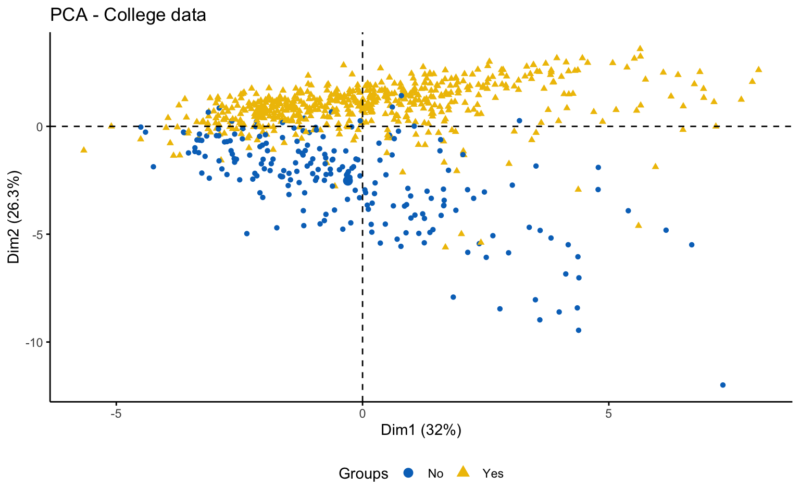

4 Cluster Analysis
This chapter focuses on clustering analysis, with the aim of identifying pattern in the data. The adopted approach is structured into multiple stages, each designed to evaluate, through different methods, the feasibility and robustness of clustering.
4.1 Feasibility of the cluster analysis
This first part investigates the feasibility of clustering by means of several exploratory techniques. Specifically, scatter plots of the variables colored according to the binary variable Private are compared with scatter plots generated from random values, in order to assess the presence of non-random patterns. The analysis is then extended to the first two principal components obtained via PCA. To further explore the correlation structure among observations, the VAT (Visual Assessment of Tendency) algorithm is applied, and the Hopkins statistic is computed to measure the clustering tendency of the dataset.


Both the VAT algorithm and the Hopkins statistic (0.1389425) indicate the presence of clusters in the dataset.
4.2 Hard clustering
This part is devoted to the application of hard clustering algorithms.
4.2.1 Hierarchical clustering
Before implementing hierarchical clustering, it is useful to compute the correlation between the cophenetic distances and the original distance matrix for each combination of distance and linkage method.
| Type | Correlations |
|---|---|
| euclidean_single | 0.7038 |
| euclidean_complete | 0.6547 |
| euclidean_average | 0.7987 |
| euclidean_ward.D2 | 0.4471 |
| manhattan_single | 0.6272 |
| manhattan_complete | 0.5267 |
| manhattan_average | 0.7605 |
| manhattan_ward.D2 | 0.4633 |
The combinations with the highest cophenetic correlations are euclidean_average and manhattan_average. For both, a dendrogram is constructed, the optimal number of clusters (k) is identified, and the tree is pruned at this level.
Hierarchical clustering with euclidean distance and average linked method
NbClust function
## [1] "Frey index : No clustering structure in this data set"## *** : The Hubert index is a graphical method of determining the number of clusters.
## In the plot of Hubert index, we seek a significant knee that corresponds to a
## significant increase of the value of the measure i.e the significant peak in Hubert
## index second differences plot.
## ## *** : The D index is a graphical method of determining the number of clusters.
## In the plot of D index, we seek a significant knee (the significant peak in Dindex
## second differences plot) that corresponds to a significant increase of the value of
## the measure.
##
## *******************************************************************
## * Among all indices:
## * 8 proposed 2 as the best number of clusters
## * 4 proposed 3 as the best number of clusters
## * 1 proposed 4 as the best number of clusters
## * 7 proposed 5 as the best number of clusters
## * 1 proposed 8 as the best number of clusters
## * 1 proposed 9 as the best number of clusters
## * 1 proposed 10 as the best number of clusters
##
## ***** Conclusion *****
##
## * According to the majority rule, the best number of clusters is 2
##
##
## *******************************************************************
Hierarchical clustering with manhattan distance and average linked method
NbClust function
## *** : The Hubert index is a graphical method of determining the number of clusters.
## In the plot of Hubert index, we seek a significant knee that corresponds to a
## significant increase of the value of the measure i.e the significant peak in Hubert
## index second differences plot.
## ## *** : The D index is a graphical method of determining the number of clusters.
## In the plot of D index, we seek a significant knee (the significant peak in Dindex
## second differences plot) that corresponds to a significant increase of the value of
## the measure.
##
## *******************************************************************
## * Among all indices:
## * 11 proposed 2 as the best number of clusters
## * 1 proposed 3 as the best number of clusters
## * 1 proposed 5 as the best number of clusters
## * 2 proposed 6 as the best number of clusters
## * 1 proposed 7 as the best number of clusters
## * 6 proposed 8 as the best number of clusters
## * 2 proposed 10 as the best number of clusters
##
## ***** Conclusion *****
##
## * According to the majority rule, the best number of clusters is 2
##
##
## *******************************************************************Eight clusters
## cluster size ave.sil.width
## 1 1 604 0.28
## 2 2 90 0.27
## 3 3 70 0.19
## 4 4 8 0.30
## 5 5 2 0.49
## 6 6 1 0.00
## 7 7 1 0.00
## 8 8 1 0.00Based on the results, the hierarchical clusterings with manhattan distance and the average linkage method, for k = 2 or k = 8, do not yield meaningful results.
4.2.2 Partional clustering
Now, let us apply algorithms of partitioning clustering, such as k-means and k-medoids. We also apply k-means++, which selects the initial centroids in a way that reduces the probability of choosing centroids that are too close to each other.
We observe that, for \(k = 2\), k-means++ successfully identifies the separation between private and public colleges, unlike the classic k-means. However, for \(k = 3\), the behavior is essentially the same.
K-means
NbClust function

## *** : The Hubert index is a graphical method of determining the number of clusters.
## In the plot of Hubert index, we seek a significant knee that corresponds to a
## significant increase of the value of the measure i.e the significant peak in Hubert
## index second differences plot.
## ## *** : The D index is a graphical method of determining the number of clusters.
## In the plot of D index, we seek a significant knee (the significant peak in Dindex
## second differences plot) that corresponds to a significant increase of the value of
## the measure.
##
## *******************************************************************
## * Among all indices:
## * 4 proposed 2 as the best number of clusters
## * 15 proposed 3 as the best number of clusters
## * 1 proposed 7 as the best number of clusters
## * 1 proposed 8 as the best number of clusters
## * 1 proposed 9 as the best number of clusters
## * 1 proposed 10 as the best number of clusters
##
## ***** Conclusion *****
##
## * According to the majority rule, the best number of clusters is 3
##
##
## *******************************************************************Three clusters

## cluster size ave.sil.width
## 1 1 93 0.18
## 2 2 246 0.23
## 3 3 438 0.26Classic k-means with \(k = 3\) performs better than hierarchical clustering, but it is still difficult to clearly distinguish three separate clusters. It should also be noted that the total variance explained by the first two principal components is relatively low.
The silhouette plot shows that the elements within each cluster do not achieve a high silhouette score.
K-means++
Two clusters
## cluster size ave.sil.width
## 1 1 676 0.36
## 2 2 101 0.20## true_labels
## pred_labelsKmeans No Yes
## No 88 13
## Yes 124 552The k-means++, with some errors, is able to identify the private and the public college and the average silhouette width has a better score than others algorithms.
K-medoids

## cluster size ave.sil.width
## 1 1 388 0.27
## 2 2 237 0.23
## 3 3 152 0.10## cluster size ave.sil.width
## 1 1 367 0.32
## 2 2 236 0.22
## 3 3 174 0.11The K-medoids algorithm is more robust to outliers, and when using the Manhattan distance instead of the Euclidean distance, it yields better results in terms of the average silhouette width.
4.2.3 Density-based clustering
Density-based clustering offers an alternative approach to partitioning methods, as it does not require the number of clusters to be specified in advance. The underlying idea is that clusters correspond to high-density regions in the data space, separated by low-density areas. In this section, two main algorithms are applied: DBSCAN (Density-Based Spatial Clustering of Applications with Noise), which identifies groups of points with sufficient density and distinguishes noise points, and OPTICS (Ordering Points To Identify the Clustering Structure), which extends DBSCAN by enabling the detection of clusters with varying densities.
DBSCAN
Setting parameters for DBSCAN | From Documentation of dbscan package function dbscan
The parameters minPts and eps define the minimum density required in the area around core points which form the backbone of clusters. minPts is the number of points required in the neighborhood around the point defined by the parameter eps (i.e., the radius around the point). Both parameters depend on each other and changing one typically requires changing the other one as well. The parameters also depend on the size of the data set with larger datasets requiring a larger minPts or a smaller eps.
minPts: The original DBSCAN paper (Ester et al, 1996) suggests to start by setting \(minPts \geq d + 1\), the data dimensionality plus one or higher with a minimum of 3. Larger values are preferable since increasing the parameter suppresses more noise in the data by requiring more points to form clusters. Sander et al (1998) uses in the examples two times the data dimensionality. Note that setting \(minPts \leq 2\) is equivalent to hierarchical clustering with the single link metric and the dendrogram cut at height eps.
eps: A suitable neighborhood size parameter eps given a fixed value for minPts can be found visually by inspecting the kNNdistplot() of the data using \(k=minPts−1\) (minPts includes the point itself, while the k-nearest neighbors distance does not). The k-nearest neighbor distance plot sorts all data points by their k-nearest neighbor distance. A sudden increase of the kNN distance (a knee) indicates that the points to the right are most likely outliers. Choose eps for DBSCAN where the knee is.
Here, the elbow method is somewhat difficult to interpret because there is no clear gap, and the resulting plot (on the right) is not satisfactory.
Optics
This implementation of OPTICS implements the original algorithm as described by Ankerst et al (1999). OPTICS is an ordering algorithm with methods to extract a clustering from the ordering.
OPTICS linearly orders the data points such that points which are spatially closest become neighbors in the ordering. The closest analog to this ordering is dendrogram in single-link hierarchical clustering.
Extracting a clustering | From Documentation of dbscan package function optics
Several methods to extract a clustering from the order returned by OPTICS are implemented:
extractDBSCAN()extracts a clustering from an OPTICS ordering that is similar to what DBSCAN would produce with an eps set to eps_cl (see Ankerst et al, 1999). The only difference to a DBSCAN clustering is that OPTICS is not able to assign some border points and reports them instead as noise.extractXi()extract clusters hierarchically specified in Ankerst et al (1999) based on the steepness of the reachability plot. One interpretation of the xi parameter is that it classifies clusters by change in relative cluster density. The used algorithm was originally contributed by the ELKI framework and is explained in Schubert et al (2018), but contains a set of fixes.
4.2.4 Cluster validation
4.2.4.1 External clustering validation
This is possible apply only on the result of K-means++ (\(k=2\)), because it is the unique clustering algorithem that identify the beahiour of the private and public college.
| Metric | Value |
|---|---|
| Corrected Rand Index | 0.3447 |
| Meila’s VI Index | 0.7293 |
Meila’s VI Index is not very high (its range is \((0, \infty)\)), but the Corrected Rand Index is low.
4.2.4.2 Stability measures
| Method | APN | AD | ADM | FOM |
|---|---|---|---|---|
| HC - Euclidean - Avg - k=2 | 0.0003 | 5.3248 | 0.0075 | 0.9988 |
| HC - Euclidean - Avg - k=5 | 0.0090 | 5.1870 | 0.1195 | 0.9812 |
| HC - Manhattan - Avg - k=2 | 0.0100 | 17.0750 | 0.1067 | 0.9968 |
| HC - Manhattan - Avg - k=8 | 0.0762 | 14.6278 | 0.7625 | 0.8614 |
| KMeans - k=3 | 0.0446 | 4.3166 | 0.1900 | 0.8142 |
| KMeans++ - k=2 | 0.2790 | 5.1583 | 1.4171 | 0.9792 |
| KMedoids - Euclidean - k=3 | 0.1047 | 4.3950 | 0.4561 | 0.8357 |
| KMedoids - Manhattan - k=3 | 0.1116 | 13.6128 | 0.4865 | 0.8384 |
## Best APN: "HC - Euclidean - Avg - k=2"
## Best AD: "KMeans - k=3"
## Best ADM: "HC - Euclidean - Avg - k=2"
## Best FOM: "KMeans - k=3"From these stability measures, we can see that the most stable clustering algorithms are HC with Euclidean distance and average linkage (\(k=2\)), and K-means (\(k=3\)). However, the first solution yields only two clusters (with one of them has only one element). Therefore, K-means with \(k=3\) is preferable.
Finally, we should choose between k-means with \(k=3\) and k-means++ with \(k=2\).
4.3 Soft Clustering
This section is devoted to the application of soft clustering approaches, such as fuzzy clustering and model-based clustering.
4.3.1 Fuzzy Clustering
Here we compare the results of FKMEN with those of FKMedN. Other algorithms, such as GK-FKM and GKB-FK, were also tested, but they required too much computation time to provide results.
Fuzzy k-Means with Entropy regularization and Noise cluster
To select the optimal value of \(k\), we rely on fuzziness measures such as:
- Partition Coefficient (PC):
## PC k=2 PC k=3 PC k=4 PC k=5 PC k=6
## 0.7949485 0.8783218 0.8910608 0.8914083 0.8325891Best value at 5
- Modified Partition Coefficient (MPC)
## MPC k=2 MPC k=3 MPC k=4 MPC k=5 MPC k=6
## 0.5898970 0.8174826 0.8547477 0.8642603 0.7991070Best value at 5
- Partition Entropy (PE)
## PE k=2 PE k=3 PE k=4 PE k=5 PE k=6
## 0.07165039 0.08514369 0.10977413 0.13535170 0.23454366Best value at 2
and on compactness/separation measures such as:
- Xie and Beni (XB) index
## XB k=2 XB k=3 XB k=4 XB k=5 XB k=6
## 0.4991835 0.5150927 0.7636770 0.8387996 1.3164018Best value at 2
- Fuzzy Silhouette (FS) index
## SIL.F k=2 SIL.F k=3 SIL.F k=4 SIL.F k=5 SIL.F k=6
## 0.3518378 0.3735748 0.3156925 0.2980328 0.2237030Best value at 3
According to these criteria, the optimal number of clusters is \(k=2\), since the Fuzzy Silhouette (FS) index reaches the second highest value at \(k=2\).
Therefore, we apply FKMEN with \(k=2\).

The resulting clusters have the following characteristics:
## Clus 1 Clus 2
## 334 443The centroids are given by:
| Apps | Accept | Enroll | Top10perc | Top25perc | F.Undergrad | P.Undergrad | Outstate | Room.Board | Books | Personal | PhD | Terminal | S.F.Ratio | perc.alumni | Expend | Grad.Rate | |
|---|---|---|---|---|---|---|---|---|---|---|---|---|---|---|---|---|---|
| Clus 1 | -0.215 | -0.205 | -0.313 | 0.472 | 0.553 | -0.358 | -0.329 | 0.798 | 0.570 | -0.095 | -0.422 | 0.538 | 0.565 | -0.426 | 0.671 | 0.333 | 0.624 |
| Clus 2 | -0.326 | -0.310 | -0.265 | -0.565 | -0.578 | -0.237 | -0.097 | -0.592 | -0.489 | -0.173 | 0.068 | -0.542 | -0.575 | 0.295 | -0.421 | -0.491 | -0.464 |
The confusion matrix is:
##
## 1 2
## No 32 180
## Yes 299 266where the Rand index has value 0.0490135.
FK-Med algorithm with Noise cluster (FK MedN algorithm)
By Fuzzy Silhouette (FS) index:
## SIL.F k=2 SIL.F k=3 SIL.F k=4 SIL.F k=5 SIL.F k=6
## 0.31672170 0.25337145 0.22778222 0.18049682 0.04819403The best value is 2.
Therefore, we apply FKMedN with \(k=2\).
The resulting clusters have the following characteristics:
## Clus 1 Clus 2
## 378 399The centroids are given by:
| Apps | Accept | Enroll | Top10perc | Top25perc | F.Undergrad | P.Undergrad | Outstate | Room.Board | Books | Personal | PhD | Terminal | S.F.Ratio | perc.alumni | Expend | Grad.Rate | |
|---|---|---|---|---|---|---|---|---|---|---|---|---|---|---|---|---|---|
| Clus 1 | -0.516 | -0.496 | -0.582 | -0.258 | 0.364 | -0.575 | -0.528 | 0.000 | -0.463 | -0.148 | 0.162 | -0.592 | -0.523 | -0.578 | -0.221 | -0.329 | -0.085 |
| Clus 2 | -0.200 | -0.093 | -0.369 | -0.032 | -0.091 | -0.462 | -0.405 | 0.742 | 0.062 | -0.602 | -0.208 | 0.756 | 0.632 | -0.275 | 0.263 | -0.049 | 0.381 |
The confusion matrix is:
##
## 1 2
## No 105 107
## Yes 273 292where the Rand index has value -6.9482421^{-4}.
4.3.2 Model Based Clustering
One disadvantage of traditional clustering methods, such as hierarchical and partitioning clustering algorithms, is that they are largely heuristic and not based on formal models.
An alternative is model-based clustering that use probabilistic assumptions.
## Best BIC values:
## VVE,9 VVE,8 VVE,7
## BIC -18547.17 -18671.4418 -18925.0659
## BIC diff 0.00 -124.2717 -377.8958Using the Mclust function, the best model selected is VVE, which corresponds to clusters with variable volume and shape but equal orientation, with \(k=9\).
## ----------------------------------------------------
## Gaussian finite mixture model fitted by EM algorithm
## ----------------------------------------------------
##
## Mclust VVE (ellipsoidal, equal orientation) model with 9 components:
##
## log-likelihood n df BIC ICL
## -7776.111 777 450 -18547.17 -18669.83
##
## Clustering table:
## 1 2 3 4 5 6 7 8 9
## 52 101 90 125 112 94 46 54 103However, from a graphical point of view, the result is very difficult to interpret.